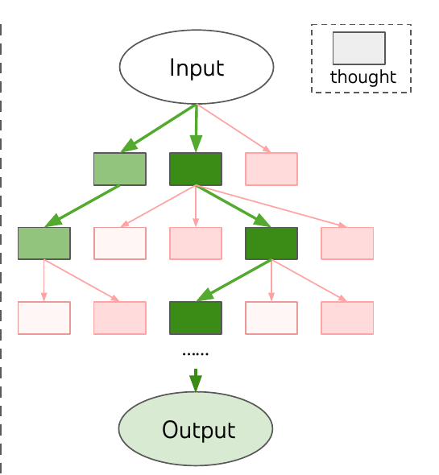

Architecture and reasoning
When agents need search
Choose the smallest control loop that improves validated outcomes, and be explicit about what branches.
Tony Koo · 4 min read · 13 Oct 2026


Tony Koo / Research
Source-backed essays on models, agents, systems and decisions.
The research desk
Choose the smallest control loop that improves validated outcomes, and be explicit about what branches.
Tony Koo · 4 min read · 13 Oct 2026

Find the right code, bound the tool loop, and verify the patch.
Tony Koo · 5 min read · 17 Oct 2026
Turn a reviewed contract and plan into a testable, accountable change.
Tony Koo · 5 min read · 17 Oct 2026
See how ReAct, Reflexion, ReWOO, tree search, Ralph and human review fit together—and when to stop.
Tony Koo · 9 min read · 22 Oct 2026
A strong validation score is a start. Deployment needs a baseline, leakage checks and a plan for changing data.
Tony Koo · 3 min read · 15 Oct 2026
A good answer needs a trustworthy record, a search method suited to the question and a path back to the source.
Tony Koo · 3 min read · 15 Oct 2026
What synchronization and validation actually require, and a modest way to test the idea on this site.
Tony Koo · 5 min read · 22 Oct 2026
Draw the line where state is committed, work is handed off and failures can be retried safely.
Tony Koo · 3 min read · 15 Oct 2026
Managed infrastructure removes some work, but ownership of data, access, recovery and cost still needs a name.
Tony Koo · 3 min read · 15 Oct 2026
A good process records what was known, what was assumed and what would change your mind.
Tony Koo · 3 min read · 15 Oct 2026
Time helps only when a plan can survive its cash needs, costs and the investor’s own behavior.
Tony Koo · 3 min read · 15 Oct 2026
Separate learned weights, task context and verification before trying to fix a weak answer.
Tony Koo · 4 min read · 13 Oct 2026
Let models propose actions while independent controls decide which effects are allowed.
Tony Koo · 4 min read · 13 Oct 2026
Compare a strong simple baseline with an agent under the same conditions, then inspect outcomes and costs.
Tony Koo · 4 min read · 13 Oct 2026
Start here
A small shelf of sources that change a design decision. The notes say why to open each one and what it does not establish.
The original attention and Transformer architecture. Start with Figures 1–2; remember that today's decoder-only models are not identical.
A practical vocabulary for workflows, routing, parallelism and agents. Useful before choosing a multi-agent framework.
A clear example of branching at intermediate reasoning steps. Its experimental gains are task- and setup-specific.
Explores heterogeneous-model planning inside MCTS. Read its benchmarks with the model pool and search budget in view.
A threat catalogue for lower-trust instructions entering an LLM workflow. Pair each threat with an enforceable control.
A practical account of task, environment and grader design. Useful when a fluent trace masks a failed outcome.